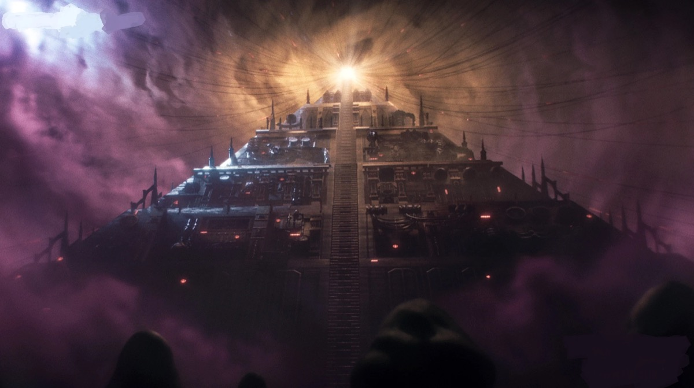

Main Page
Welcome to Warpedia,
the grimdark encyclopedia of the 41st millennium that anyone can read.
1 article in English · Contents · Random article
From today's featured article

The Imperium of Mankind is the vast interstellar empire of humanity in Warhammer 40,000. Founded by the Emperor of Mankind at the end of the Age of Strife, it was forged in the Great Crusade and nearly destroyed in the Horus Heresy, after which the mortally wounded Emperor was interred on the Golden Throne. Ten thousand years later it spans over a million worlds, ruled in his name by the High Lords of Terra, worshipping him as a god and fighting for survival against Chaos, Orks, Tyranids and Necrons. Split in two by the Great Rift, it is now led by the resurrected primarch Roboute Guilliman in the Indomitus Crusade.
Did you know ...
- ... that the Emperor of Mankind has not issued a recorded command in over ten thousand years, yet every Imperial law is still written in his name?
- ... that the Imperial Guard was renamed the Astra Militarum in 2014?
- ... that Cadia withstood twelve Black Crusades before falling to the thirteenth in 999.M41?
- ... that the Squats vanished from the setting in the 1990s and returned in 2022 as the Leagues of Votann?
- ... that the Adepta Sororitas exist because of a loophole: the Ecclesiarchy may not keep "men" under arms?
Start reading
In the news

- The Indomitus Crusade continues under Roboute Guilliman as fleets push into the Imperium Nihilus.
- Lion El'Jonson, primarch of the Dark Angels, returns after ten thousand years.
- Hive Fleet Leviathan advances on the Imperium from below the galactic plane.
- The Necrons of the Pariah Nexus extinguish psychic life across the Nephilim Sector.
Ongoing: Plague Wars · Arks of Omen · Great Rift
From the archives
Events of the Imperial calendar
- c. 798.M30 – The Great Crusade begins.
- 005.M31 – Horus purges the loyalists of four Legions at Isstvan III, beginning the Horus Heresy.
- 014.M31 – The Siege of Terra ends; the Emperor is interred on the Golden Throne.
- 745.M41 – Hive Fleet Behemoth is defeated at the Battle of Macragge.
- 999.M41 – Cadia falls and the Great Rift opens.
Today's featured picture

Warships of the Imperial Navy in orbit above Holy Terra, the cradle of humanity and throneworld of the Imperium. Its surface is one continuous city, crowned by the Imperial Palace.
Artwork © Games Workshop
About Warpedia
Warpedia is a personal, ad-free encyclopedia of the Warhammer 40,000 setting, laid out like Wikipedia so that every topic reads the same way. Red links are articles still to be written. See About Warpedia for sources and disclaimers.